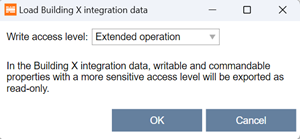

下载 Building X 集成数据
为了Building X为了能够访问数据，必须为每个设备加载集成数据。完全加载后，该数据不会加载到设备中。
- A device is connected and discovered.
- The control program is downloaded.
- Open the Startup > Configure and download task.
- In the Engineered devices tab, right-click a device that matches a discovered device.
- Select Load and then Building X integration data.
- The Load Building X integration data dialog opens.

- From the Write access level drop-down list, select the write access level to assign to the cloud.
Note: Any points that require a more sensitive level of access are exported as read-only and cannot be controlled via the cloud. Normally, all objects of type outputs and setpoints are commandable/writable, but some sensors could also be defined as commandable. - Click OK.
- You have downloaded the Building X integration data to a device.
- Onboard the device to the Cloud and activate the required data points.
Onboarding the device to cloud from Building X

这Building X每次重新设计设备时，都必须将集成数据加载到设备中，例如添加新的 I/O 数据点、新警报、新趋势数据等。
有关更多信息，请参阅 Building X 数据设置用户指南A6V12481797.
要删除Building X来自设备的数据，Clear deviceorClear application必须执行任务。阅读更多关于Clear deviceorClear application在部分：
Configure and download
Access levels
访问级别 | 姓名 | 描述 |
|---|---|---|
1 | 内部的 | 访问所有 BACnet 对象和属性以执行非常专业的操作，例如在开发过程中。 |
2 | 延长服务 | 尚未被 HQ 解决方案使用。 |
3 | 基础服务 | 访问用于调试的 BACnet 对象和属性，例如配置值扩展、I/O 扩展等。 |
4 | 行政人员 | 尚未被 HQ 解决方案使用。 |
5 | 扩展操作 | 访问 BACnet 对象和属性以进行扩展操作和监视，例如网络和设备对象。所有 I/Os 均可见 |
6 | 标准操作 | 访问 BACnet 对象和属性以进行标准操作和监控（日常业务），例如管理站上的房间和设备信息。 |
7 | 基本操作 | 房间用户访问 BACnet 对象和属性，例如房间单元上可见的数据点。 |